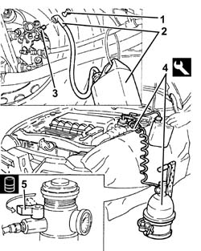
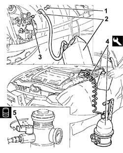

0010T40 BRAKE FLUID - Change.
- Path
- Procedures > 00 MAINTENANCE > 0010 NEW UNITS AND PLANNED MAINTENANCE'. > 0010T vehicle oil and fluids > 0010T40 BRAKE FLUID - Change.
- Kind
- repair procedure (removal / refitting; the operation number is the code)
- Applies to
- engines: 2.0 JTS, 3.2 V6, 2.0 JTS; all production periods
- Interactive page
- https://sloeber94.github.io/elrnDB-a156/en/#/3237413
Applies to: engines: 3.2 V6; all production periods; only with equipment: Smart gearbox
Position the vehicle on the ramp.
1. Remove the protective cap on the brake caliper bleed valve.
2. Connect the collection system (pipe and reservoir) to the bleed valve on the brake caliper.
3. Open the bleed valve on the brake caliper.
Operate the brake pedal until all the fluid has come out.
Repeat the above operations for the other brake calipers.
4. Connect the tool to the brake-clutch fluid reservoir.
 | Name | Country |
|---|---|---|
4 | Brake/clutch bleeding equipment | 1.806.097.001 |
5. Slowly open the cock on the reservoir of the device and fill the braking system with the specified fluid.
 | Type | Component | Name | Qty. |
|---|---|---|---|---|
5 | Fluid | BRAKE-CLUTCH HYDRAULIC SYSTEMS | TUTELA CAR TOP 4 FOR ALFA ROMEO | 0.525 |

Applies to: engines: 3.2 V6; all production periods; only with equipment: Smart gearbox
Wait until all the air contained in the hydraulic brake system has come out.
Close the bleed valves on the brake calipers and fit the protective caps.
Remove the fluid collection devices.
Remove the equipment.
| Name | Country |
|---|---|---|
- | Brake/clutch bleeding equipment | 1.806.097.001 |
Remove the car from the ramps.
Check the efficiency of the braking system.
Applies to: engines: 2.0 JTS, 2.0 JTS; all production periods; only with equipment: Smart gearbox
Position the vehicle on the ramp.
1. Remove the protective cap on the brake caliper bleed valve.
2. Connect the collection system (pipe and reservoir) to the bleed valve on the brake caliper.
3. Open the bleed valve on the brake caliper.
Operate the brake pedal until all the fluid has come out.
Repeat the above operations for the other brake calipers.
4. Connect the tool to the brake-clutch fluid reservoir.
| Name | Country |
|---|---|---|
4 | Brake/clutch bleeding equipment | 1.806.097.001 |
5. Slowly open the cock on the reservoir of the device and fill the braking system with the specified fluid.
| Type | Component | Name | Qty. |
|---|---|---|---|---|
5 | Fluid [l] | BRAKE-CLUTCH HYDRAULIC SYSTEMS | TUTELA CAR TOP 4 FOR ALFA ROMEO | 0.5 |

Applies to: engines: 2.0 JTS, 2.0 JTS; all production periods; only with equipment: Smart gearbox
Wait until all the air contained in the hydraulic brake system has come out.
Close the bleed valves on the brake calipers and fit the protective caps.
Remove the fluid collection devices.
Remove the equipment.
| Name | Country |
|---|---|---|
- | Brake/clutch bleeding equipment | 1.806.097.001 |
Remove the car from the ramps.
Check the efficiency of the braking system.